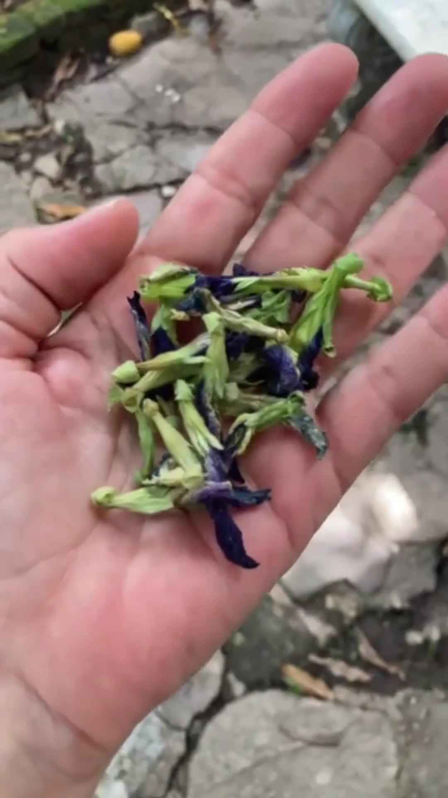
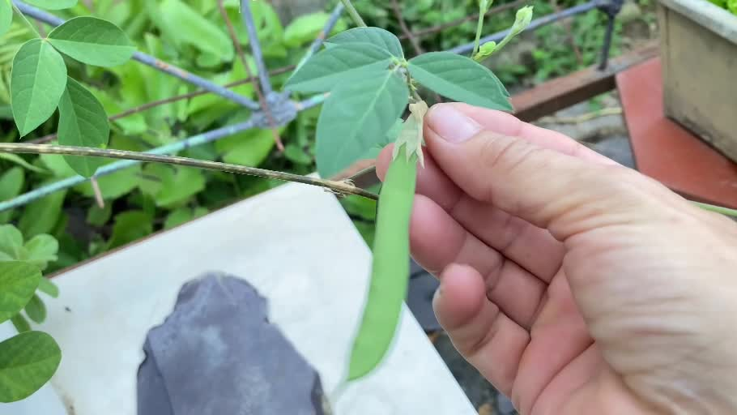

I grow butterfly pea in my garden in Trinidad, and making tea gives me another way to enjoy its flowers. For this cup, I used dried flowers in a mesh infuser, then added lime and honey. My video follows the flowers from the vine to the tea table.
From the vine to the cup
The blue flowers, the dried flowers in my hand, and the finished tea are all from my own photographs and footage. This recipe uses dried flowers; I also use freshly picked flowers.


My butterfly pea tea with lime and honey
Ingredients
- 1 cup hot water
- 1 tablespoon dried butterfly pea flowers
- Lime juice, to taste
- Honey, to taste
Method
- Put the dried flowers in a mesh tea infuser.
- Pour the hot water into a heatproof cup and add the infuser.
- Leave the flowers to steep for 10 minutes, then remove the infuser.
- Add lime juice and honey to taste, and stir.
I estimated around 20 dried flowers in my tablespoon. That is an approximate count, so the tablespoon is the measure I use here.
In my video, the tea is blue during brewing and purple after I add the lime. The photograph above shows the finished cup.
Fresh flowers are another option
I also use freshly picked flowers for tea. The quantities and steeping time above describe my dried-flower version.
Next, I plan to film a fresh-flower version and try lemon balm, peppermint or tulsi for flavor. I’ll share the quantities and how the combinations taste once I’ve made them.
A little garden update: my first pod
I recently spotted my first pod on this plant. Here it is still green and attached to the vine—a new stage for me to document as I keep growing it.
